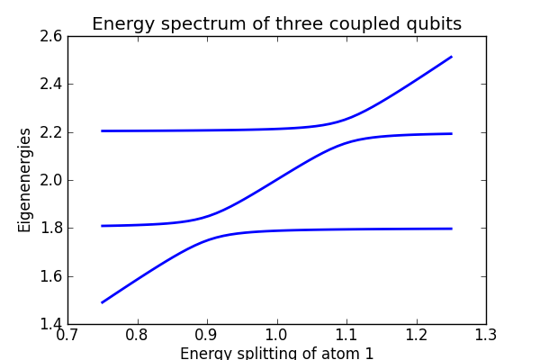

Energy spectrum of a coupled three qubit system¶
Ground state properties of an coupled three qubit system.
from qutip import *
from pylab import *
def compute(w1list, w2, w3, g12, g13):
# Pre-compute operators for the hamiltonian
sz1 = tensor(sigmaz(), qeye(2), qeye(2))
sx1 = tensor(sigmax(), qeye(2), qeye(2))
sz2 = tensor(qeye(2), sigmaz(), qeye(2))
sx2 = tensor(qeye(2), sigmax(), qeye(2))
sz3 = tensor(qeye(2), qeye(2), sigmaz())
sx3 = tensor(qeye(2), qeye(2), sigmax())
idx = 0
evals_mat = zeros((len(w1list),2*2*2))
for w1 in w1list:
# evaluate the Hamiltonian
H = w1 * sz1 + w2 * sz2 + w3 * sz3 + g12 * sx1 * sx2 + g13 * sx1 * sx3
# find the energy eigenvalues of the composite system
ekets, evals = H.eigenstates()
evals_mat[idx,:] = real(evals)
idx += 1
return evals_mat
#
# set up the calculation
#
w1 = 1.0 * 2 * pi # atom 1 frequency: sweep this one
w2 = 0.9 * 2 * pi # atom 2 frequency
w3 = 1.1 * 2 * pi # atom 3 frequency
g12 = 0.05 * 2 * pi # atom1-atom2 coupling strength
g13 = 0.05 * 2 * pi # atom1-atom3 coupling strength
w1list = linspace(0.75, 1.25, 50) * 2 * pi # atom 1 frequency range
# run the compute function
evals_mat = compute(w1list, w2, w3, g12, g13)
#
# plot the energy eigenvalues
#
fig=figure(figsize=[6,4])
for n in [1,2,3]:# range(len(evals_mat[0,:])):
plot(w1list / (2*pi), (evals_mat[:,n]-evals_mat[:,0]) / (2*pi), 'b',lw=2)
xlabel('Energy splitting of atom 1')
ylabel('Eigenenergies')
title('Energy spectrum of three coupled qubits')
savefig('examples-energy-spectrum.png')
close(fig)
